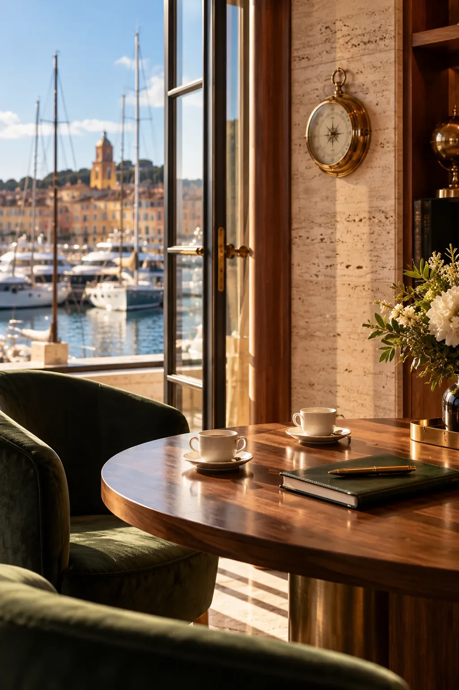

Un rendez‑vous d'une heure
L'écoute
Avant de parler de bateaux, nous parlons de vous. À Saint‑Tropez, à Monaco ou chez vous, un courtier écoute la façon dont vous naviguerez vraiment : au mouillage ou en traversée, en famille ou entre amis, en juillet seulement ou toute la saison.
Ce que nous faisons
- Vos zones, vos saisons, le nombre d'invités à bord
- Votre budget d'achat, et surtout celui d'exploitation
- Vos contraintes de calendrier, de pavillon et de fiscalité, avec vos conseils
Ce que vous recevez
- Un cahier des charges écrit, sous 48 heures
- Une première estimation du coût annuel
- Un calendrier réaliste, de la recherche au premier départ